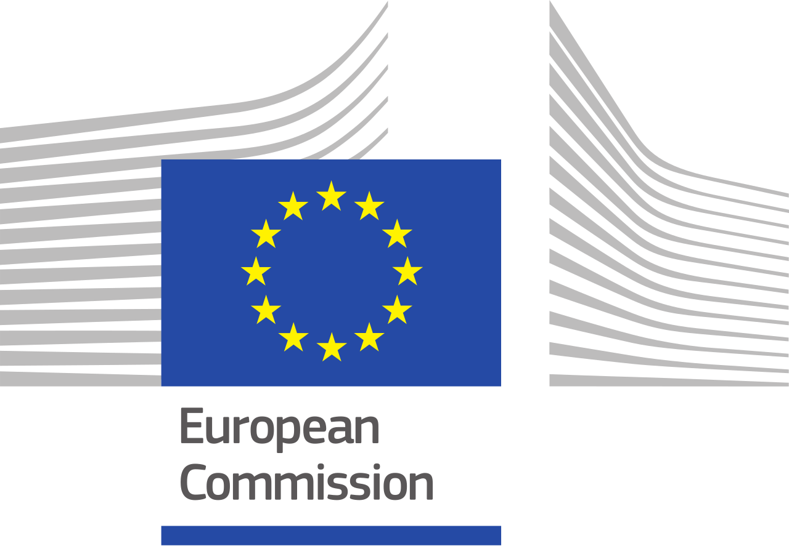

Luís Rita
About me...
Student with a strong passion in learning, creating and exploring new ways of thinking. My willingness to work hard, my open personality and optimism, allow me to positively influence my peers and to promote group cohesion. Softening, initially hard tasks. I am always open to new projects with potential to have a positive impact. Because, at the end, it is what matters... Our experiences and how we use them to make the world a better place.
Hobbies & Leadership
Enrolling in many high-level competition activities allowed me to develop useful skills to perform well under
pressure and gave me some leadership capabilities:
1. AEISTécnico Futsal Athlete (Portuguese University Futsal League);
2. Ohshikai Karate Do Goju Ryu Athlete - Brown Belt (including participation in several National Championships).
Volunteering & Experience
 Institute of Molecular Medicine Lisbon (iMM)
Institute of Molecular Medicine Lisbon (iMM)
2018 – Moment
[Master Thesis in Bioinformatics – Community Finding in Phylogenetic Networks]
 Private Mathematics & Physics Tutor
Private Mathematics & Physics Tutor
2017 – Moment
[Teaching in my hometown to high school students]
Guest Speaker in International Day (Erasmus+ 30th birthday)
2017 Sorbonne Université
[In collaboration with the Portuguese Embassy in France, the goal was to run a stand to share my experiences,
present
my country, my university of origin and attract students to take their mobility there]
 Astro (NFIST) Member
Astro (NFIST) Member
2013 – Moment
[Non-profit organization which objective is to promote the interest around astronomy and astrophysics, in Portugal,
through workshops, planetary sessions and observational activities]
Languages
English (Advanced Level)
French (Intermediate Level)
Spanish (Basic Level)
Portuguese (Native)
Education
Sorbonne Université
Mechatronic Systems for Rehabilitation
Mobility semester (prediction): in the top 15%.
2017 – 2018
 Instituto Superior Técnico (University of Lisbon)
Instituto Superior Técnico (University of Lisbon)
Integrated Masters Biomedical Engineering. Bachelor’s degree in the top 25% - 14.2 (0 - 20); Master’s degree
(prediction): in the top 15% - 17 (0 - 20)
2016 – 2018 (Master’s Degree);
2013 – 2016 (Bachelor’s Degree)
Faculty of Medicine (University of Lisbon)
Integrated Masters Biomedical Engineering. Same grades as in Instituto Superior Técnico (course integrated in the
previous)
2013 – 2018
Escola Secundária Eça de Queirós (High School)
Sciences and Technologies. Grades each school year: 2010/2011 (0 - 20) - 18.3; 2011/2012 (0 - 20) – 18.3;
2012/2013 (0 - 20) – 19.
Final Results (accounting with national exams): Physics & Chemistry (2012) - 17 (0 – 20);
Biology & Geology (2012) – 19 (0 – 20); Mathematics (2013) – 19 (0 – 20).
2010 – 2013
Honors & Awards
 MIT App Inventor 2 App of the Month
MIT App Inventor 2 App of the Month
2018 MIT
[Prize attributed to the best Android apps developed using MIT AI2]

Erasmus SMS Scholarship
2017 European Commission
[Bursary awarded to students in order to help them to cover their living expenses during mobility in a foreign
university – Sorbonne Université]
3rd place in the National Astronomy Olympiad
2013 SP Astronomia (Fronteira, Portugal)
[The 10 best classified in the country were selected to participate in a national final]
 Participation at International Olympiad on Astronomy and Astrophysics
Participation at International Olympiad on Astronomy and Astrophysics
2013 IOAA (Volos, Greece)
[The 3 best classified in Portugal represented the country in an international Olympiad]
 Participation at National Final Biology Olympiad
Participation at National Final Biology Olympiad
2013 Ordem dos Biólogos (Lisbon, Portugal)
[The 36 best classified in the country were selected to participate in a national final]
High School Honor Roll
2013 Escola Secundária Eça de Queirós (Lisbon, Portugal)
[Award given to the 2 most outstanding students in the school]
High School Academic Merit Award
2013 Rotary - Clube Lisboa - Olivais e Fundação Rotária Portuguesa (Lisbon, Portugal)
[Prize attributed to the best students in Lisbon]
High School Excellence Award
2011, 2012 & 2013 Escola Secundária Eça de Queirós (Lisbon, Portugal)
[Award attributed based exclusively in the score obtained by the end of each year]